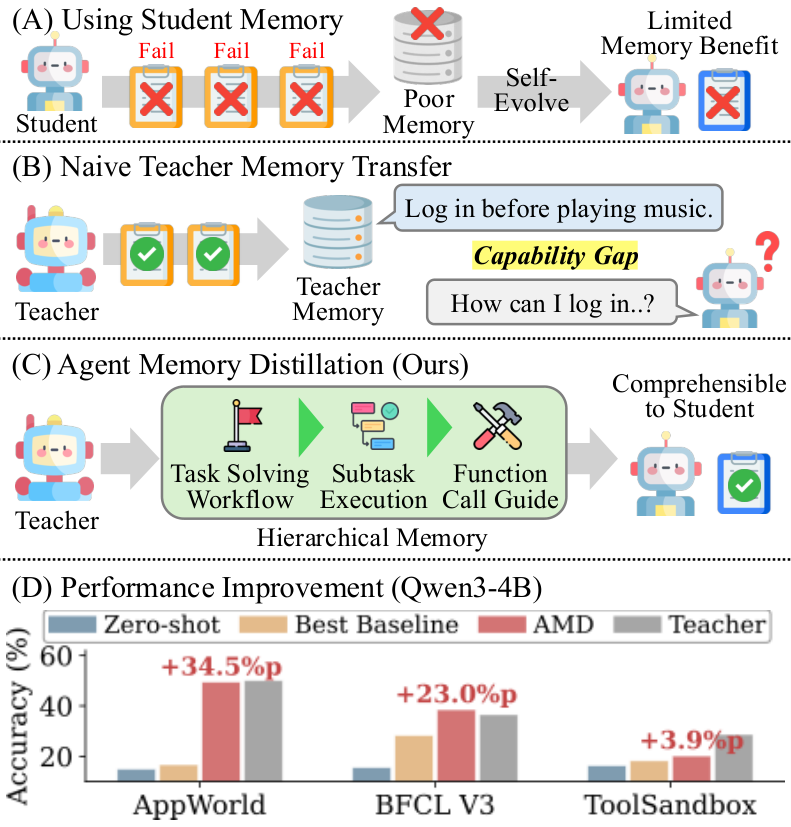
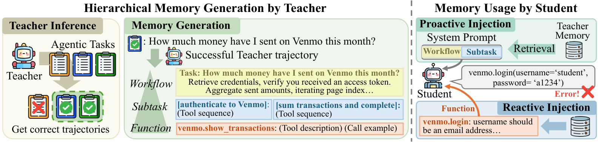

Agent Memory Distillation: Hierarchical Teacher Memory for Small LLM Agents
Paper: "Agent Memory Distillation: Empowering Small LLM Agents with Hierarchical Teacher Memory" (arXiv 2608.07169). Authors: Taeil Kim, Kangsan Kim, Sung Ju Hwang (KAIST, DeepAuto.ai). Project page: agent-memory-distillation.github.io.
TL;DR
- Agent memory systems assume the agent can generate its own successful trajectories to remember — small models often can't, so self-memory gives them little (and, per this paper's baselines, sometimes hurts: ReasoningBank drops Qwen3-4B on AppWorld from 14.88% to 10.71%). AMD distills a large teacher agent's trajectories into memory the small student consumes — training-free, no weights touched.
- The key design is hierarchy matched to injection policy: Workflow memory (task-level strategies, values abstracted to typed placeholders) and Subtask memory (concrete mid-granularity execution examples) are injected proactively at task start via embedding retrieval; Function memory (per-function calling conventions and pitfalls) is retrieved reactively when a tool call errors.
- With GPT-5-mini as teacher and four 4B–8B students, AMD gains +27.2%p on AppWorld, +11.2%p on BFCL V3, +3.4%p on ToolSandbox on average (up to +34.5%p), beating memory baselines throughout. With AMD, Qwen3-8B (51.79%) actually surpasses its teacher (50.00%) on AppWorld; Subtask memory is the workhorse (+25.0%p for Qwen3-4B over workflow-only).
Why this matters
There are two standard ways to move a big model's agentic competence into a small model: fine-tune on teacher trajectories (costly, per-model, and brittle across tool APIs) or just prompt better (static, doesn't scale with experience). AMD stakes out the middle: distillation into a memory store rather than into weights or a single prompt. That's attractive for exactly the deployments where small agents matter — on-device and high-volume settings where you can afford one teacher sweep over a task distribution but not per-student training, and where the tool ecosystem changes fast enough that "just re-run the teacher and rebuild the memory" beats "retrain."
The negative result motivating the design deserves as much attention as the method. Flat teacher memory — dumping the teacher's insights into the kind of single-granularity store that works for frontier-model memory systems — is unstable for small students, degrading performance in several model×benchmark cells. The paper's diagnosis is comprehension bandwidth: abstract strategy text exceeds what a 4B model can follow, while raw trajectories are too long and too specific. Small students need knowledge served at multiple granularities, each formatted for how it will be used. That's a general lesson for anyone building memory for cheap executor agents in a big-orchestrator/small-worker architecture, and it dovetails with what this tracker keeps seeing: memory design and model scale are not independent choices.
The core idea
Frame memory construction as an optimization over what to store, not how to train. Given a task distribution \(\mathcal{S}\), a frozen student policy \(\pi^S\), and task reward \(R\), pick the memory store that maximizes student success:
where the store is a union of three banks built from successful teacher trajectories:
Retrieval throughout is embedding-based cosine similarity with a minimum-similarity threshold (entries below it are discarded rather than force-injected):
(scoring display reconstructed from the paper's description of embedding-based retrieval). The hierarchy exists because each level answers a different failure of small agents: Workflow fixes bad plans, Subtask fixes bad execution of plan steps, Function fixes bad tool calls. And each level gets its own injection timing — plans and examples up front, function fixes only at the moment of error, keeping the context budget spent where it pays.

Figure 1 from the paper: small students can't bootstrap useful memory from their own (mostly failed) trajectories, and flat teacher-memory transfer is unstable; AMD's hierarchical store yields consistent gains (panel D: Qwen3-4B).How it works
Construction (once, from teacher rollouts on the task distribution):
- Workflow memory \(\mathcal{M}^{\mathrm{wf}}\): from each successful teacher trajectory, the teacher writes a natural-language task-completion strategy, with concrete values abstracted into typed placeholders (
<ID>,<EMAIL>,<FILE_PATH>) so strategies transfer across instances. - Subtask memory \(\mathcal{M}^{\mathrm{st}}\): trajectories are decomposed into semantically coherent segments, each stored with a label, a description, and the concrete execution example (actual calls and observations) at intermediate granularity.
- Function memory \(\mathcal{M}^{\mathrm{fn}}\): individual function calls are extracted with context and optional API documentation, indexed by function name, recording per-function calling conventions and common pitfalls.
Inference (student, frozen):
AMD INFERENCE LOOP (student π_S, banks M_wf / M_st / M_fn)
On task s:
1. q ← embed(task instruction)
2. wf ← top-1 of M_wf by cos(q, ·) # skip if below threshold
3. student decomposes s into ≤6 subtask labels
4. for each label ℓ:
5. st_ℓ ← top-1 of M_st by cos(embed(ℓ), ·) # dedup across labels
6. system prompt ← sys ⊕ wf ⊕ {st_ℓ} # proactive injection
7. run agent loop:
8. if tool call returns error on function f:
9. cands ← M_fn[f] # indexed by name
10. m ← argmax over cands of cos(embed(task), ·)
11. append m to the error message # reactive injection
12. retry
Note who does what: the student does the decomposition into subtask labels (so retrieval queries reflect its own plan, at its own level of abstraction), while the teacher authored everything retrieved. Proactive injection is capped at top-1 per query with deduplication — the method is conservative about context spend — and reactive Function memory rides along on the error message, arriving exactly when the student has a concrete failure to repair rather than bloating every prompt.

Figure 2 from the paper: the teacher's successful trajectories are compiled into Workflow, Subtask, and Function banks; Workflow and Subtask are injected at task start, Function memory only upon tool-calling errors.Results
Across four students (Qwen3-4B, Qwen3-8B, LLaMA3.1-8B, Gemma4-E4B) with GPT-5-mini as teacher, average gains over zero-shot are +27.2%p (AppWorld), +11.2%p (BFCL V3), +3.4%p (ToolSandbox), with the largest single jump +34.5%p (Qwen3-4B on AppWorld). The memory baselines (ReasoningBank, MemP, SASM) are inconsistent and sometimes negative — the ReasoningBank drop on Qwen3-4B (14.88% → 10.71% on AppWorld) being the clearest demonstration that memory built for capable self-improving agents doesn't transfer down-scale. With AMD, Qwen3-8B reaches 51.79% on AppWorld, above the 50.00% teacher, and Qwen3-4B is comparable at 49.40%.
Ablations: Workflow alone provides a consistent floor; adding Subtask memory produces the largest incremental improvement (+25.0%p for Qwen3-4B on AppWorld over workflow-only), with Function memory adding smaller but real gains on top. Teacher choice matters non-monotonically for weaker students — stronger teachers help capable students most, while a 4B student can do better with GPT-5-mini's memory than with a nominally stronger teacher's — i.e., teacher–student compatibility, not teacher capability, is the binding constraint at small scale. AMD also transfers efficiency, not just accuracy: student interaction-step counts fall toward the teacher's (~14.9 steps for Qwen3-4B), meaning fewer flailing exploration turns, and the smallest (4B) students benefit most overall.
How it connects
- ReasoningBank Code Release (tracked today) — the self-evolution counterpart and the defeated baseline: reasoning-as-memory works when the agent can generate its own signal, and AMD's data says small models can't; distillation supplies the missing experience. The two compose naturally — bootstrap a small agent with AMD, then let ReasoningBank-style self-memory take over where it's competent.
- Reason Wide, Not Deep (tracked, tutorial today) — same week, same move (compile trajectories into injected text, training-free), different axes: there one static skill per domain distilled from the model's own reasoning mode; here a retrieval-served hierarchy distilled from a stronger teacher. Skill-as-monolith vs memory-as-store is a live design question these two papers jointly frame.
- MSCE: Memory-to-Skills Consolidation (tracked, tutorial) — the workflow/subtask/function split is a consolidation taxonomy in the same spirit; MSCE consolidates an agent's own episodic memory, AMD consolidates a teacher's.
- PAST-Bench (tracked) — the right harness for the open question here: does AMD's persistence actually improve behavior over time, and through which pathway (memory vs procedural reuse), once the store grows?
- Survey: On-Policy Distillation for LLMs (tracked) — AMD sits at the fully off-policy, zero-gradient corner of the distillation design space: pure context-space transfer, with retrieval as the student-adaptivity mechanism that on-policy methods get from rollouts.
Critical take
The evaluation is tool-use-centric and the teacher sweep is doing unbounded work: AMD needs successful teacher trajectories over the target task distribution, so the honest cost comparison is against "run GPT-5-mini and route hard tasks to it," which the paper doesn't price out — if the teacher must visit the distribution anyway, when is a distilled 4B + memory actually cheaper than teacher calls at deployment volume? ToolSandbox's +3.4%p also hints the approach thins out where tasks are conversational and state-dependent rather than procedure-dominated. The student-surpasses-teacher result (51.79 vs 50.00) is the most interesting number in the paper and gets the least analysis — plausibly the same aggregation effect seen in Reason Wide, Not Deep (memory compiled across many episodes is more reliable than any single teacher rollout), but that's my inference, not theirs (verify in the paper). Finally, everything is single-shot construction from a frozen teacher: no memory maintenance, staleness, or conflict story yet, which is where agent-memory systems historically die — PAST-Bench-style matched persistence-on/off evaluation would tell us whether this store keeps paying after the first pass.
If you remember three things
- Small agents can't bootstrap their own memory — they don't generate enough successful trajectories, and frontier-style memory systems (ReasoningBank included) can actively hurt them; distill a teacher's experience instead, training-free.
- Match granularity to injection policy: task-level strategies and mid-level examples go in proactively at task start; per-function pitfalls arrive reactively on tool errors. Mid-granularity Subtask memory — concrete examples, not abstractions — is where the gains live (+25%p).
- Compatibility beats capability: at 4B–8B scale the best teacher is the one whose memory the student can follow, and a well-distilled memory can push a student past its own teacher (Qwen3-8B 51.79% vs GPT-5-mini 50.00% on AppWorld).